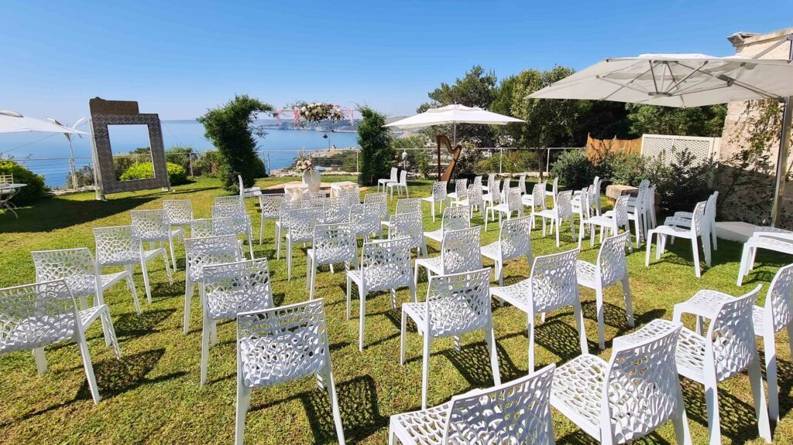
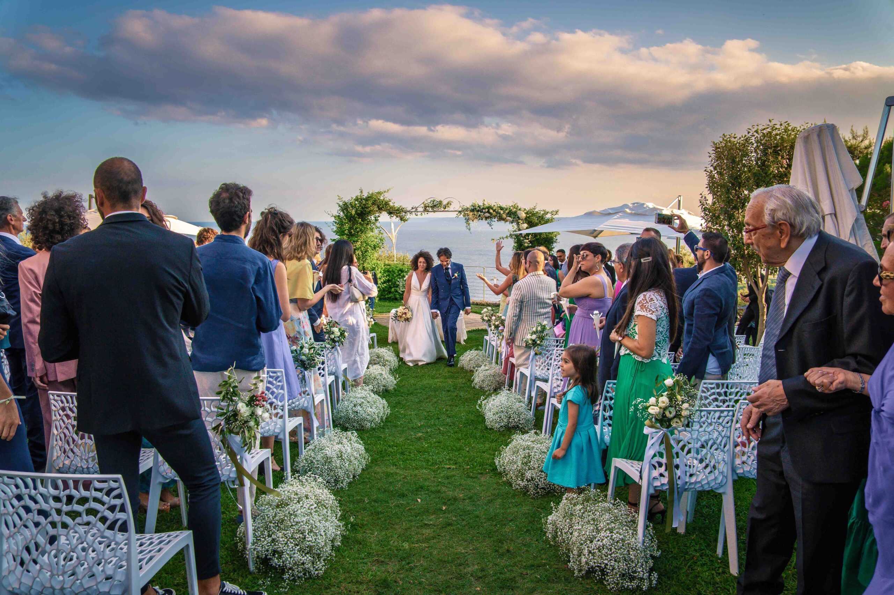

Choisir un mariage de destination dans les Pouilles est une décision réfléchie, ancrée dans l’attachement au territoire. Mais il y a un choix que les couples, italiens comme étrangers, négligent souvent : opter pour une date en semaine. Cela peut changer toute l’expérience de votre mariage, et en mieux.
Six raisons de se marier en semaine
-
01.
Plus de lieux réellement disponiblesLe Salento est devenu l’une des destinations de mariage les plus demandées d’Italie. Les week-ends partent plus d’un an à l’avance. Un jour de semaine élargit nettement le choix et vous permet de réserver le lieu que vous voulez vraiment — Cala dei Balcani compris — sans compromis.
-
02.
Des coûts plus souplesLes réservations en semaine s’accompagnent de meilleures conditions, ce qui libère du budget pour les fleurs, la musique, la décoration et l’accueil des invités.
-
03.
Des voyages plus simplesLes invités d’un mariage de destination restent de toute façon plusieurs jours. Une célébration en semaine leur permet de voyager hors de la cohue du week-end : vols moins chers, transferts plus simples, hébergements plus faciles à trouver. Pour une destination estivale comme les Pouilles, ce n’est pas rien.
-
04.
Une expérience plus authentiqueUn mariage en semaine permet à chacun de découvrir la région comme il faut : moins de monde, des journées plus lentes, un accès plus facile aux villages, aux plages et aux dégustations. Dans le Salento, la différence se sent : vous partagez le lieu avec vos proches, sans la cohue des week-ends d’été.
-
05.
Plus de temps pour profiterUn mariage de destination dépasse le seul jour de la cérémonie. Une date en semaine laisse de la place au reste : dîner de bienvenue, excursions, dégustations, brunch du lendemain — le mariage devient un vrai voyage.
-
06.
De la place pour personnaliserAvec moins de pression logistique et des prestataires plus disponibles, une date en semaine laisse plus de marge pour personnaliser chaque détail. Le mariage se construit autour de vous, pas autour d’un format.
Pourquoi Cala dei Balcani
Au cœur du Salento, Cala dei Balcani offre des espaces distincts et modulables qui laissent la journée se dérouler à son rythme. L’équipe travaille avec vous pour transformer votre idée en projet concret — de l’accueil des invités à la coordination des prestataires et à la conception du menu.
Une autre façon de vivre le mariage
Choisir une date en semaine dans les Pouilles, c’est donner la priorité à la qualité de l’expérience. Vous savourez chaque moment, avec la liberté de rendre la journée vraiment vôtre. Pour un mariage de destination dans le Salento, une date en semaine est peut-être le premier pas vers la célébration que vous aviez en tête : plus intime, plus vraie, plus à vous.
Envie de connaître les dates disponibles ?
Écrivez-nous pour vérifier les disponibilités de Cala dei Balcani et trouver ensemble la date qui vous convient.

